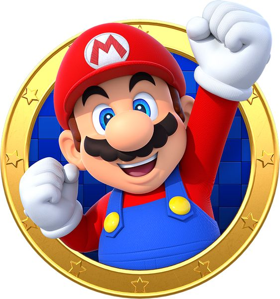
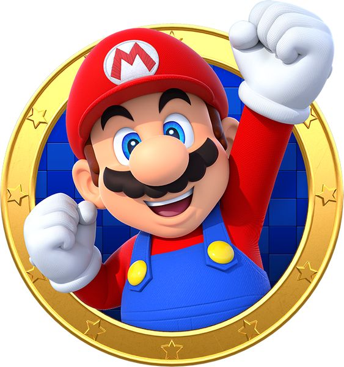

Super Mario:
The Timeless Icon of Video Games
For more than 35 years, Super Mario has been at the heart of gaming culture. From his humble beginnings in
the 1980s to becoming one of the most recognizable characters in the world, Mario has influenced generations
of gamers. Whether it’s the nostalgia of exploring the Mushroom Kingdom or the thrill of new adventures in
Mario’s ever-expanding universe, this plumber in red overalls has defined what it means to be a video game
hero.
In this post, we’ll explore why Super Mario remains a legendary figure, how the franchise has evolved over
the years, and why his influence is stronger than ever.
The Birth of a Legend:
Super Mario’s Origins
Mario made his first appearance in 1981’s Donkey Kong as a carpenter named “Jumpman,” tasked with rescuing a
damsel in distress from a giant ape. However, his true breakout moment came in 1985 with the release of
Super Mario Bros. on the Nintendo Entertainment System (NES).
In this game, Mario, now a plumber, must rescue Princess Peach from the clutches of Bowser, the
fire-breathing king of the Koopas. What made Super Mario Bros. revolutionary wasn’t just the captivating
gameplay, but the way it introduced players to a side-scrolling world filled with hidden secrets, power-ups,
and dynamic level design. It laid the foundation for platformers and changed the gaming landscape forever.
Why Super Mario Is So Special
1. Simple Yet Engaging Gameplay
One of the reasons why Super Mario remains timeless is its perfect blend of simplicity and challenge. The
games are accessible to players of all ages, yet they provide enough depth and difficulty to keep even the
most experienced gamers hooked. The core mechanics—running, jumping, and power-ups—have remained consistent,
yet every new title introduces innovative twists that keep the gameplay fresh.
2. Endlessly Imaginative Worlds
The Super Mario series is known for its creative and vibrant worlds. Whether traversing the Mushroom
Kingdom, swimming through underwater caves, or bouncing between planets in Super Mario Galaxy, each Mario
game introduces new, magical environments. These worlds are filled with memorable enemies, unique obstacles,
and colorful designs that invite exploration and discovery.
3. Iconic Power-Ups
Few video game series are as closely associated with power-ups as Super Mario. From the classic Super
Mushroom, which makes Mario grow in size, to the Fire Flower, which gives him the ability to throw
fireballs, Mario’s power-ups have become symbols of the franchise. Newer games have continued this
tradition, introducing fun and game-changing abilities, like the Cap Throw in Super Mario Odyssey or the
Super Bell in Super Mario 3D World, which turns Mario into a cat.
The Evolution of Super Mario
Super Mario has continued to evolve with the times, always pushing the boundaries of gaming innovation.
Below are some of the key milestones in the franchise’s history:
Super Mario 64 (1996): Mario’s first foray into 3D, Super Mario 64 was a groundbreaking game for the
Nintendo 64 that gave players full control of Mario in a three-dimensional world. It redefined how
platformers could be experienced, with open-world exploration and fluid, dynamic movement.
Super Mario Galaxy (2007): This Wii classic took Mario into outer space, introducing gravity-defying
gameplay and stunning visuals. Its innovative level design and creative mechanics made it one of the most
beloved games in the series.
Super Mario Odyssey (2017): In Super Mario Odyssey, released for the Nintendo Switch, Mario embarks on a
globe-trotting adventure to rescue Princess Peach. The game introduced the Cappy mechanic, allowing Mario to
possess enemies and objects to solve puzzles and explore in creative ways. It was a return to the open-world
style of Super Mario 64, earning critical acclaim for its innovation and nostalgic nods to past games.
The Super Mario Phenomenon in Pop Culture
Beyond the games, Super Mario has become a global pop culture icon. From TV shows and movies to merchandise
and theme parks, Mario is everywhere. He’s not just a video game character; he’s a symbol of fun,
creativity, and nostalgia for millions of people around the world.
Super Mario in Other Media
In 1989, Mario made his television debut in "The Super Mario Bros. Super Show!", an animated series that
brought the adventures of Mario and Luigi to the small screen.
In 2023, the Super Mario Bros. Movie hit theaters, bringing Mario, Luigi, Princess Peach, and Bowser to the
big screen in a high-quality animated film that attracted both long-time fans and a new generation of
moviegoers.
Nintendo also opened Super Nintendo World, a theme park based on Mario and other Nintendo properties, in
Universal Studios Japan in 2021, with expansions planned for other Universal Studios locations.
The Future of Super Mario
With Mario’s continuous presence in gaming and pop culture, his future looks as bright as ever. Nintendo
continues to release exciting new Mario games, such as Super Mario Maker, where players can create and share
their own levels, and Mario Kart, which remains one of the most popular multiplayer experiences on any
platform.
With the Nintendo Switch continuing to dominate the gaming market and future Mario projects in the works,
fans can expect more adventures, innovations, and memorable moments with the world’s favorite plumber.
Final Thoughts: Why Mario Endures
Super Mario isn’t just a character; he’s an enduring symbol of the joy that gaming can bring. His adventures
have inspired millions of players over the years, and as long as there’s a new level to explore or a Goomba
to stomp, Mario will continue to be at the forefront of the gaming world. Whether you’re a nostalgic fan of
the classic games or a newcomer to his newer adventures, Mario’s timeless appeal ensures he’ll be jumping
and saving the day for years to come.
 
